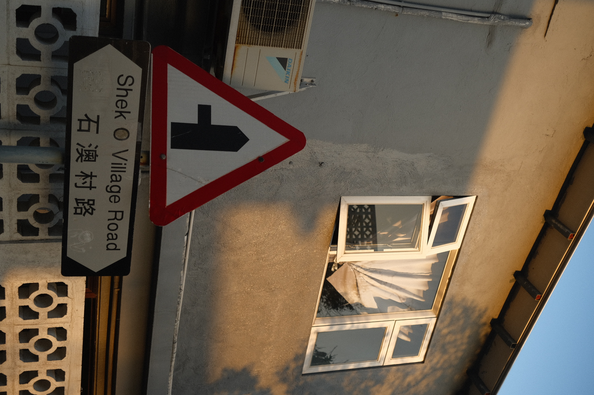
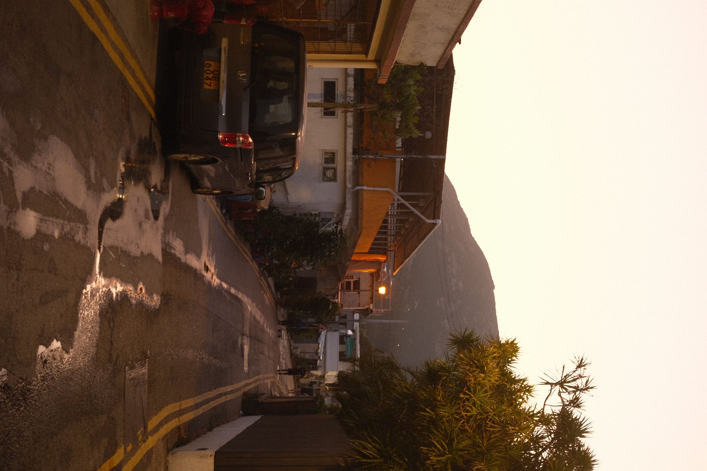

04Shek O
Photographic Project
May, 2023
Location
Shek O, Hong Kong
Camera
Fujifilm XT-3
Chillin' in the coast of Hong Kong Island
Shek O, a picturesque village on the southeastern coast of Hong Kong Island. Renowned for its laid-back atmosphere, stunning landscapes, and rich history, Shek O offers a stark contrast to Hong Kong's bustling urban centers.
This project explores the costal vibe of the local community and the rustic charm of its colorful houses.



